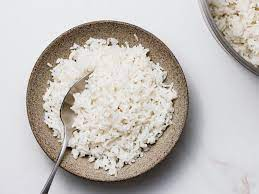

Coconut Rice

Description
A make-ahead basmati side dish with mild coconut flavors.
Ingredients
- 3 onions
- 1 tablespoons sunflower oil
- 1 tablespoons butter
- 1kg bag basmati rice
- 2 x 400ml cans coconut milk
Steps
- Peel and finely chop the onions
- In a big saucepan or casserole with a lid, gently soften the onions in the oil and butter
- When really soft, add the rice and cook, stirring, for a couple of mins.
-
Tip in the coconut milk with 2 cans of water. Bring to a gentle simmer, stirring, then cover, lower the heat to the lowest setting and cook for 10-15 mins.
(Scraping the bottom regularly with a wooden spoon to stop it sticking)
-
Check the rice: it should be sticky and creamy but not watery, and not quite cooked – still a bit crunchy. Tip into a big bowl that will fit in a microwave and cover with cling film.
(Chill until ready to serve, for up to a day.)
-
To serve, poke a hole in the cling film and microwave for 8 mins on High, stirring halfway, until piping hot and cooked through. Add some salt and stir with a fork to break up the grains.